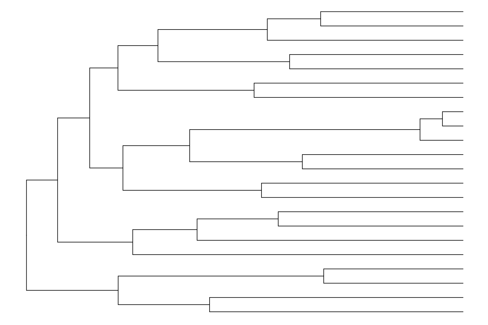

Presentación: Estimación de Eventos de Extinción Masiva
Haz clic en la imagen para ver el PDF de la presentación
Estimación de Eventos de Extinción Masiva con treepar en R
La extinción masiva es un proceso clave en la evolución de la biodiversidad, marcando periodos en los que un gran número de especies desaparece en un corto intervalo de tiempo. La detección de estos eventos en filogenias permite inferir patrones históricos de diversificación y evaluar cómo la biodiversidad ha respondido a cambios ambientales y evolutivos a lo largo del tiempo.
El enfoque de treepar se basa en la estimación de tasas de especiación (\(\lambda\)) y extinción (\(\mu\)) a lo largo del tiempo en una filogenia dada. La función clave, bd.shifts.optim, utiliza métodos de máxima verosimilitud para encontrar los puntos en el tiempo en los que estas tasas cambiaron significativamente. Al habilitar la opción de extinciones masivas (ME = TRUE), el modelo permite detectar periodos en los que la tasa de supervivencia de las especies disminuyó abruptamente, lo que puede indicar una extinción masiva.
Cargar librerías y el árbol filogenético
# Cargar las librerías necesariaslibrary(ape) library(TreePar)library(tidyverse)library(ggtree)# Cargar el árbol desde un archivo Nexustree <-read.nexus("../docs/u1_PatDiv/subarbol_ingroup.nex")# Visualizar el árbolggtree(tree) +theme_tree()

Obtención de los tiempos de diversificación
Extraeremos y ordenaremos los tiempos de diversificación (tiempos de ramificación) del árbol:
# Obtener y ordenar los tiempos de especiación# La función getx() extrae los tiempos de ramificación del árbol.times <-sort(getx(tree), decreasing =TRUE) # sort () rdena los tiempos en orden descendente.times <-unname(times) # elimina los nombres de los elementos del vector para simplificar su manipulación.print(times)
Definiremos los parámetros necesarios para el análisis de cambios en las tasas de diversificación:
rho <-22/26# Proporción de especies muestreadas (22 de 26 especies)grid <-0.2# Tamaño de la grilla de búsqueda de cambios de tasa (en millones de años)start <-min(times) # Tiempo inicial para la búsqueda de cambios de tasaend <-max(times) # Tiempo final para la búsqueda de cambios de tasa
Modelo con un Evento de Extinción Masiva
# Ejecutar la optimización con detección de extinción masivares_MEE <-bd.shifts.optim(times, c(rho, 1), grid, start, end, ME =TRUE, survival =1) # Activar detección de extinciones masivas
Esto representa cuánto mejor se ajusta el modelo con 2 eventos en comparación con el modelo con 1 evento.
Grados de libertad = 2
Se obtiene de la diferencia en el número de parámetros entre ambos modelos (6 - 4 = 2).
p-value = 0.8819704
El p-valor es alto (\(>0.05\)), lo que indica que NO hay evidencia suficiente para preferir el modelo con 2 eventos de extinción sobre el modelo con 1 evento.
Esto sugiere que el modelo con 1 evento de extinción es suficiente para explicar los datos, y agregar un segundo evento no mejora significativamente el ajuste del modelo.
Estimación de Extinciones Masivas con el Modelo Episodic Fossilized Birth-Death en RevBayes
Introducción
En este tutorial, aprenderemos a inferir eventos de extinción masiva utilizando un modelo Episodic Fossilized Birth-Death (EFBD) en RevBayes. Siguiendo el tutorial oficial Mass Extinction Estimation.
¿Qué es el modelo de diversificación episódico?
El modelo episodic birth-death es un proceso en el que las tasas de especiación, extinción y fosilización son constantes dentro de intervalos de tiempo, pero pueden cambiar entre ellos. En ciertos momentos, este modelo incorpora la posibilidad de que ocurra una extinción masiva, en la que un gran porcentaje de linajes desaparece de manera instantánea con una probabilidad \(M_i\).
Para evitar confundir cambios en las tasas de diversificación con eventos de extinción masiva, este modelo incorpora un Horseshoe Markov Random Field (MRF), el cual permite detectar correctamente los cambios en especiación, extinción y fosilización sin interpretaciones erróneas.
Este enfoque está basado en la implementación presentada en Magee y Höhna (2021) y nos permitirá explorar cómo la diversidad ha cambiado a lo largo del tiempo y si existen eventos de extinción masiva en nuestra filogenia.
Cálculo de Valores Necesarios para el Análisis
Antes de definir los priors en nuestro modelo de estimación de extinciones masivas, es importante calcular valores iniciales para las tasas de especiación, extinción y fosilización. Para ello, ejecutaremos un modelo de tasa constante usando el enfoque Fossilized Birth-Death Process (FBDP) en RevBayes.
Este script permite estimar los valores base para los priors en las tasas de diversificación.
Pasos clave del script
Leer los datos filogenéticos desde el archivo subarbol_ingroup.nex.
Definir priors iniciales para las tasas de especiación, extinción y fosilización usando una distribución Half-Cauchy(0,0.1).
Configurar movimientos del MCMC para optimizar la exploración del espacio de parámetros.
Definir el modelo FBDP, donde:
lambda = tasa de especiación
mu = tasa de extinción
phi = tasa de fosilización
Phi = probabilidad de muestreo de especies extantes
Ejecutar la inferencia bayesiana (MCMC) para estimar los parámetros.
**Guarda este script como mcmc_CRFBD.Rev y ejecútalo en RevBayes:**
######################## Lectura de los Datos ######################### Leer el árbol filogenético "observado"T <-readTrees("../data/subarbol_ingroup.nex")[1]# Extraer taxones del árboltaxa <-T.taxa()# Inicializar vectores de movimientos y monitoresmoves =VectorMoves()monitors =VectorMonitors()########### Priors ############ Definir priors iniciales con distribución Half-Cauchy(0,0.1)speciation_rate ~dnHalfCauchy(0.0,0.1)moves.append( mvScaleBactrian(speciation_rate, weight=7.5) )moves.append( mvRandomDive(speciation_rate, weight=2.5) )extinction_rate ~dnHalfCauchy(0.0,0.1)moves.append( mvScaleBactrian(extinction_rate, weight=7.5) )moves.append( mvRandomDive(extinction_rate, weight=2.5) )fossilization_rate ~dnHalfCauchy(0.0,0.1)moves.append( mvScaleBactrian(fossilization_rate, weight=7.5) )moves.append( mvRandomDive(fossilization_rate, weight=2.5) )# Agregar un movimiento conjunto para explorar múltiples parámetros simultáneamentejoint_move =mvAVMVN(weight=10.0)joint_move.addVariable(speciation_rate)joint_move.addVariable(extinction_rate)joint_move.addVariable(fossilization_rate)moves.append( joint_move )### Probabilidad de muestreo de especies extantes# Se fija en 22/26, ya que hay ~26 especies descritas de Eupomphini y se han muestreado 22.sampling_at_present <-22/26############### Definir el Modelo ###############timetree ~dnFBDP(rootAge =T.rootAge(),lambda = speciation_rate,mu = extinction_rate,phi = fossilization_rate,Phi = sampling_at_present,condition ="time",taxa = taxa,initialTre = T)# Restringir el modelo con el árbol observadotimetree.clamp(T)# Envolver el modelo en un workspacemymodel =model(sampling_at_present)############## Monitores ############### Guardar los valores de los parámetros en un archivo de salidamonitors.append( mnModel(filename="../out/eupomphini_CRFBD.log", printgen=10, separator = TAB) )monitors.append( mnScreen(printgen=1000) )################# Ejecutar el MCMC #################mymcmc =mcmc(mymodel, monitors, moves, nruns=2, combine="mixed")# Ejecutar la cadena MCMC con 50,000 generacionesmymcmc.run(generations=50000, tuningInterval=200)# Salir de RevBayesq()
Ejecutar en R: Cálculo de Priors y Hiperprior para RevBayes con RevGadgets
# Cargar la librería RevGadgetslibrary(RevGadgets)# Leer las tasas de diversificación desde el archivo de salida de RevBayesdiversification_rates <-readTrace("../docs/u1_PatDiv/output/CRFBD/eupomphini_CRFBD.log", burnin =0.25)[[1]]# Ajustar una distribución Gamma a las tasas inferidasspeciation_prior <-posteriorSamplesToParametricPrior(diversification_rates$speciation_rate, "gamma")extinction_prior <-posteriorSamplesToParametricPrior(diversification_rates$extinction_rate, "gamma")fossilization_prior <-posteriorSamplesToParametricPrior(diversification_rates$fossilization_rate, "gamma")# Imprimir los valores de los parámetros de la distribución Gammaprint(speciation_prior) # [1] -> alpha, [2] -> beta
# Calcular el hiperprior para RevBayes usando HSMRF con 10 intervaloshyperprior_value <-setMRFGlobalScaleHyperpriorNShifts(10, "HSMRF")# Imprimir el valor del hiperpriorprint(hyperprior_value)
[1] 0.04446432
Código en RevBayes para Estimación de Extinciones Masivas
Guarda este script como mcmc_EFBD_ME.Rev y ejecútalo en RevBayes:
# Cargar el árbol filogenético desde un archivo en formato NEXUST <-readTrees("../docs/u1_PatDiv/subarbol_ingroup.nex")[1]# Extraer la información taxonómica del árbol taxa <-T.taxa()
Definir vectores para almacenar los movimientos de MCMC y los monitores de resultados.
moves =VectorMoves()monitors =VectorMonitors()
Definir el número de intervalos en los que dividiremos el tiempo para modelar la diversificación.
NUM_INTERVALS =10# Número total de intervalos de tiempoNUM_BREAKS := NUM_INTERVALS -1# Número de puntos de cambio entre intervalos
Configuración de los Intervalos de Tiempo
El modelo Episodic Fossilized Birth-Death asume que los puntos en el tiempo están distribuidos equidistantemente. Para ello, creamos un vector de tiempos que servirá para definir las tasas de especiación, extinción y fosilización, así como para modelar las extinciones masivas.
El modelo utiliza una mezcla de saltos reversibles (reversible jump mixture model), lo que significa que la inferencia de extinciones masivas se realiza en dos partes:
Probabilidad de que ocurra una extinción masiva en un intervalo de tiempo determinado.
Probabilidad de que un linaje se extinga en caso de que haya una extinción masiva.
Para establecer un número esperado de extinciones masivas, podemos definir un valor conservador como 1.0:
expected_number_of_mass_extinctions <-1.0
Como hay NUM_BREAKS posibles puntos de extinción, calculamos la probabilidad de que no ocurra una extinción masiva en un intervalo dado:
Definir un Prior para la Mortalidad en Extinciones Masivas
Dado que las extinciones masivas suelen eliminar la mayoría de los linajes, utilizamos una distribución Beta(18,2) como prior. Esta distribución tiene:
Media de 0.9, lo que implica que, en promedio, el 90% de los linajes mueren en una extinción masiva.
Intervalo de confianza del 95% entre [0.74, 0.987], asegurando que la mayoría de los linajes se extinguen cuando ocurre una extinción masiva.
Ahora configuramos el prior para todas las NUM_BREAKS posibles extinciones masivas:
for (i in1:NUM_BREAKS) { mass_extinction_probabilities[i] ~dnReversibleJumpMixture(0.0, dnBeta(18.0, 2.0), mix_p)moves.append(mvRJSwitch(mass_extinction_probabilities[i]))moves.append(mvSlideBactrian(mass_extinction_probabilities[i]))}
Define un modelo en el que cada intervalo de tiempo tiene una probabilidad de albergar una extinción masiva.
Si hay una extinción masiva, se modela con dnBeta(18.0, 2.0).
Si no hay extinción, se asigna un valor de 0.0.
✅ Movimientos del MCMC
Para explorar correctamente los parámetros de extinciones masivas en el análisis MCMC, agregamos:
mvRJSwitch → Determina si hay o no una extinción masiva en un intervalo.
mvSlideBactrian → Ajusta la probabilidad de muerte en caso de extinción.
Priors sobre la Variabilidad de las Tasas
Variabilidad en las Tasas de Especiación, Extinción y Fosilización
Para modelar la variación en las tasas de diversificación a lo largo del tiempo, utilizamos el Horseshoe Markov Random Field (HSMRF) Birth-Death Model (Magee et al. 2020).
Este modelo:
Permite que las tasas de diversificación cambien a lo largo del tiempo.
Usa una distribución Horseshoe (Carvalho et al. 2010) para modelar los cambios en la escala logarítmica.
Asume que la mayoría de los cambios son pequeños, pero permite saltos grandes en las tasas.
Escala Global de Variabilidad
Para controlar la variabilidad general de las tasas de especiación, extinción y fosilización desde el presente hasta el pasado, usamos un parámetro de escala global.
También debemos definir un hiperprior para la escala global, que ayuda a determinar la variabilidad esperada en las tasas. En este caso, usamos el valor 0.044 cuando trabajamos con 10 intervalos de tasa.
Nota: Si se usa un número diferente de intervalos, se puede calcular el hiperprior con la función de RevGadgets: setMRFGlobalScaleHyperpriorNShifts(NUM_INTERVALS).
Definir los Priors para las Tasas de Especiación, Extinción y Fosilización
Cada parámetro de escala global se modela con una distribución Half-Cauchy centrada en 0 con parámetro de dispersión 1.
Flexible: Permite modelar valores grandes sin restringir excesivamente la variabilidad.
Evita sesgos: No impone límites arbitrarios a los cambios de tasa.
Asegura que las tasas sean positivas, ya que la distribución Half-Cauchy solo tiene valores positivos.
Especificación de las Tasas Episódicas
Modelado de las Tasas en el Tiempo
Para modelar las tasas de especiación, extinción y fosilización a lo largo del tiempo, utilizamos distribuciones Horseshoe Markov Random Field (HSMRF) en su escala logarítmica.
Sin embargo, la tasa en el presente debe modelarse de manera distinta porque:
No está correlacionada con ninguna tasa anterior.
Se modela hacia atrás en el tiempo en lugar de hacia adelante.
Esto permite que, si conocemos algún evento que afectó la diversificación en un momento específico (ej. hace 25 millones de años), podamos incorporarlo en el análisis.
Priorización de la Primera Tasa (Tasa en el Presente)
Dado que el modelo contiene muchos parámetros, utilizamos un enfoque empírico bayesiano (Empirical Bayes Strategy).
Primero, se ajusta un modelo FBD de tasa constante (Constant-Rate Fossilized Birth-Death).
Luego, se extrae la distribución posterior de esas tasas y se ajusta un prior Gamma para la tasa en el presente.
Esto nos permite definir priors más realistas y adaptados a los datos.
El archivo mcmc_CRFBD.Rev puede ejecutarse para estimar estas distribuciones, y la función de RevGadgets posteriorSamplesToParametricPrior() permite ajustar una distribución a las muestras posteriores.
En este paso, aplicamos una variedad de movimientos para explorar eficientemente los valores para cada tasa en el presente (speciation_rate_at_present, extinction_rate_at_present, fossilization_rate_at_present), aplicamos diferentes tipos de movimientos:
Los parámetros de especiación, extinción y fosilización están correlacionados, por lo que debemos aplicar movimientos conjuntos para evitar sesgos en la inferencia.
✅ Se aplican movimientos individuales para explorar cada parámetro por separado.
✅ Se usan movimientos conjuntos (mvAVMVN) para capturar correlaciones entre tasas.
✅ Se aplica mvUpDownScale para mantener relaciones biológicamente realistas entre las tasas.
Parametrización No Centralizada para HSMRF
Para hacer posible el MCMC en el modelo HSMRF, utilizamos una parametrización no centralizada. Esto significa que:
Primero definimos los cambios en la escala logarítmica de las tasas entre intervalos.
Luego ensamblamos el vector de tasas, utilizando una combinación de parámetros globales y locales.
Implementamos adaptabilidad local, permitiendo que algunas tasas varíen rápidamente y otras sean más estables.
Asignación de Parámetros de Escala Local
Cada intervalo de tiempo necesita una varianza específica para la distribución Horseshoe, lo que nos permite modelar la adaptabilidad local.
for (i in1:NUM_BREAKS) {# Escala variable para cada intervalo de tiempo sigma_speciation_rate[i] ~dnHalfCauchy(0,1) sigma_extinction_rate[i] ~dnHalfCauchy(0,1) sigma_fossilization_rate[i] ~dnHalfCauchy(0,1)# Escala variable para cada intervalo de tiempo sigma_speciation_rate[i].setValue(runif(1,0.005,0.1)[1]) sigma_extinction_rate[i].setValue(runif(1,0.005,0.1)[1]) sigma_fossilization_rate[i].setValue(runif(1,0.005,0.1)[1])# Movimientos para los valores individuales de sigmamoves.append( mvScaleBactrian(sigma_speciation_rate[i], weight=5) )moves.append( mvScaleBactrian(sigma_extinction_rate[i], weight=5) )moves.append( mvScaleBactrian(sigma_fossilization_rate[i], weight=5) )# Parametrización no centralizada del modelo HSMRF delta_log_speciation_rate[i] ~dnNormal( mean=0, sd=sigma_speciation_rate[i]*speciation_rate_global_scale*speciation_rate_global_scale_hyperprior ) delta_log_extinction_rate[i] ~dnNormal( mean=0, sd=sigma_extinction_rate[i]*extinction_rate_global_scale*extinction_rate_global_scale_hyperprior ) delta_log_fossilization_rate[i] ~dnNormal( mean=0, sd=sigma_fossilization_rate[i]*fossilization_rate_global_scale*fossilization_rate_global_scale_hyperprior )# Inicialización con valores aleatorios entre -0.1 y 0.1 delta_log_speciation_rate[i].setValue(runif(1,-0.1,0.1)[1]) delta_log_extinction_rate[i].setValue(runif(1,-0.1,0.1)[1]) delta_log_fossilization_rate[i].setValue(runif(1,-0.1,0.1)[1])# Movimientos para Mejorar la Mezcla en MCMCmoves.append( mvSlideBactrian(delta_log_speciation_rate[i], weight=5) )moves.append( mvSlideBactrian(delta_log_extinction_rate[i], weight=5) )moves.append( mvSlideBactrian(delta_log_fossilization_rate[i], weight=5) )# aplicamos movimientos de tipo Up-Down para mantener la correlación entre los cambios de tasas delta_up_down_move[i] =mvUpDownSlide(weight=5.0) delta_up_down_move[i].addVariable(delta_log_speciation_rate[i],TRUE) delta_up_down_move[i].addVariable(delta_log_extinction_rate[i],TRUE)moves.append( delta_up_down_move[i] )}
Resumen
✅ Se modelan los cambios en las tasas en la escala logarítmica usando una parametrización no centralizada.
✅ Se definen parámetros de escala local (sigma), permitiendo que algunas tasas cambien más rápido que otras.
✅ Se agregan movimientos (moves) para mejorar la mezcla de MCMC y evitar estancamientos en valores subóptimos.
✅ Se aplican movimientos Up-Down para correlacionar los cambios en especiación y extinción.
Ensamblar las Tasas en el Tiempo
Hasta ahora, hemos definido:
✅ Tasa en el presente (speciation_rate_at_present, etc.).
✅ Cambios en la escala logarítmica (delta_log_speciation_rate, etc.).
✅ Parámetros de escala local y global (sigma_speciation_rate, etc.).
Ahora, ensamblamos estos elementos en vectores de tasas continuas con la función fnassembleContinuousMRF.
Los hiperparámetros de escala global y local requieren un método de muestreo Gibbs, que permite actualizar grupos de parámetros en función de distribuciones condicionales.
# Gibbs sampler para las escalas globales y localesmoves.append( mvHSRFHyperpriorsGibbs(speciation_rate_global_scale, sigma_speciation_rate, delta_log_speciation_rate, speciation_rate_global_scale_hyperprior, propGlobalOnly=0.75, weight=10) )moves.append( mvHSRFHyperpriorsGibbs(extinction_rate_global_scale, sigma_extinction_rate, delta_log_extinction_rate, extinction_rate_global_scale_hyperprior, propGlobalOnly=0.75, weight=10) )moves.append( mvHSRFHyperpriorsGibbs(fossilization_rate_global_scale, sigma_fossilization_rate, delta_log_fossilization_rate, fossilization_rate_global_scale_hyperprior, propGlobalOnly=0.75, weight=10) )
Aplicar Movimientos de Intercambio (Swap Moves)
Para mejorar la mezcla del MCMC, permitimos intercambiar valores de delta_log y sigma entre intervalos de tiempo adyacentes.
# Intercambio de intervalos adyacentes en los cambios logarítmicos y escalas localesmoves.append( mvHSRFIntervalSwap(delta_log_speciation_rate, sigma_speciation_rate, weight=5) )moves.append( mvHSRFIntervalSwap(delta_log_extinction_rate, sigma_extinction_rate, weight=5) )moves.append( mvHSRFIntervalSwap(delta_log_fossilization_rate, sigma_fossilization_rate, weight=5) )
Resumen
✅ Se ensamblan las tasas de diversificación utilizando fnassembleContinuousMRF.
✅ Se aplica Elliptical Slice Sampling para actualizar los cambios en la escala logarítmica.
✅ Se usa muestreo Gibbs para mejorar la estimación de los hiperparámetros.
✅ Se aplican movimientos de intercambio (swap moves) para mejorar la mezcla en MCMC.
Muestreo Incompleto de Taxones
En estudios de diversificación, es importante considerar el sesgo de muestreo, ya que en muchos casos solo se ha muestreado una parte de las especies vivientes.
Para este análisis, sabemos que hemos muestreado 22 de 26 especies de Eupomphini vivientes. Por lo tanto, definimos un nodo constante que representa esta proporción:
sampling_at_present <-22/26
Definir la Edad de la Raíz
El modelo Fossilized Birth-Death Process (FBDP) necesita un parámetro de edad de la raíz (rootAge).
Dado que usamos un árbol fijo, podemos extraer directamente la edad de la raíz desde el árbol cargado:
root_time <-T.rootAge()
Especificar el Árbol Temporal
Con todos los parámetros listos, podemos definir el nodo estocástico que representa el árbol temporal usando el modelo Episodic Fossilized Birth-Death (dnFBDP):
Probabilidad de que ocurra una extinción masiva en cada intervalo.
Phi
Proporción de especies muestreadas.
condition="time"
Se asume que el proceso ocurre en el tiempo (puede cambiarse si queremos condicionar en el muestreo de la raíz).
taxa
Lista de taxones en el análisis.
initialTree
Árbol inicial para comenzar la inferencia.
Fijarlo a los datos observados
Una vez que hemos definido el árbol temporal (timetree), debemos fijarlo a los datos observados. Esto significa que no estamos infiriendo la filogenia, sino que usamos un árbol previamente estimado.
timetree.clamp(T)
Definir el Modelo Completo
Ahora encapsulamos todo el modelo dentro de un objeto de workspace, lo que permite a RevBayes reconocer todas las variables y relaciones definidas.
mymodel =model(speciation_rate)
Configurar los Monitores
Los monitores en RevBayes permiten registrar el estado de los parámetros durante la ejecución del MCMC.
Definimos varios tipos de monitores:
1️⃣ Monitor principal (mnModel): Guarda el estado de todos los parámetros del modelo.
2️⃣ Monitores de archivo (mnFile): Almacenan parámetros específicos en archivos separados para facilitar el análisis posterior.
3️⃣ Monitor de pantalla (mnScreen): Muestra valores clave en la consola durante la ejecución.
Monitor Principal
Este monitor guarda todas las variables del modelo en un solo archivo. Se ejecutará cada 10 generaciones.
Corre 30,000 generaciones, con más generaciones puede tomar varias horas dependiendo del hardware.
tuningInterval=200 ajusta los movimientos cada 200 iteraciones para mejorar la eficiencia.
Si el MCMC tarda demasiado, puedes probar con menos generaciones (100,000 o 50,000) y revisar si los parámetros convergen antes de ejecutar una corrida más larga.
Evaluar el Soporte para Extinciones Masivas
Una vez finalizada la ejecución del MCMC, los archivos de salida contienen las muestras de la distribución posterior.
📌 Objetivo: Evaluar qué tan fuertemente respaldada está la hipótesis de que ocurrieron eventos de extinción masivaen ciertos intervalos de tiempo.
🔹 ¿Cómo lo hacemos?
Examinamos la probabilidad posterior de cada evento de extinción masiva.
Calculamos factores de Bayes para determinar si hay soporte significativo.
Visualizamos los resultados con RevGadgets en R.
Análisis en R con RevGadgets
Ejecuta este código en R:
# Cargar la libreríalibrary(RevGadgets)# Leer las probabilidades de extinción masiva desde el archivo de salidamass_extinction_probabilities <-readTrace("../docs/u1_PatDiv/output/CRFBD/eupomphini_EFBDME_mass_extinction_probabilities.log", burnin =0.25)# Establecer la probabilidad a priori de una extinción masiva en cualquier tiempoprior_n_expected <-0.1# Número esperado de eventos de extinción masivan_intervals <-10# Número de intervalos de tiempo en el modeloprior_prob <- prior_n_expected / (n_intervals -1)# Definir los tiempos en los que se permitieron eventos de extinción masivatree_age <-19.5829128# Edad del árbol en millones de añosinterval_times <- tree_age *seq(1/n_intervals, (n_intervals-1)/n_intervals, 1/n_intervals)# Graficar los resultadosp <-plotMassExtinctions(mass_extinction_trace = mass_extinction_probabilities,mass_extinction_times = interval_times,mass_extinction_name ="mass_extinction_probabilities",prior_prob = prior_prob)p
¿Qué significa el Factor de Bayes?
El Factor de Bayes (BF) compara dos modelos:
Hipótesis Nula (H₀): No hubo un evento de extinción masiva en un intervalo de tiempo.
Hipótesis Alternativa (H₁): Sí hubo un evento de extinción masiva en ese intervalo.
El log(Bayes Factor) se calcula como:
\(2log(BF)\) = \(2(logP(D|H_1)- logP(D|H_0))\)
Donde:
\(P(D|H_1)\) es la probabilidad de los datos asumiendo que hubo una extinción masiva.
\(P(D|H_0)\) es la probabilidad de los datos asumiendo que no hubo una extinción masiva.
Un 2 log BF ≥ 10 indica fuerte evidencia a favor de una extinción masiva en ese tiempo.